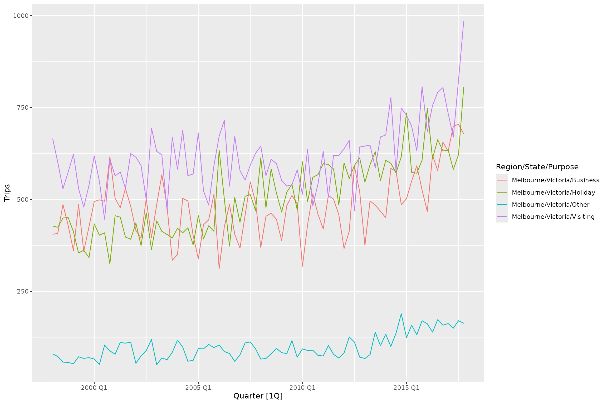
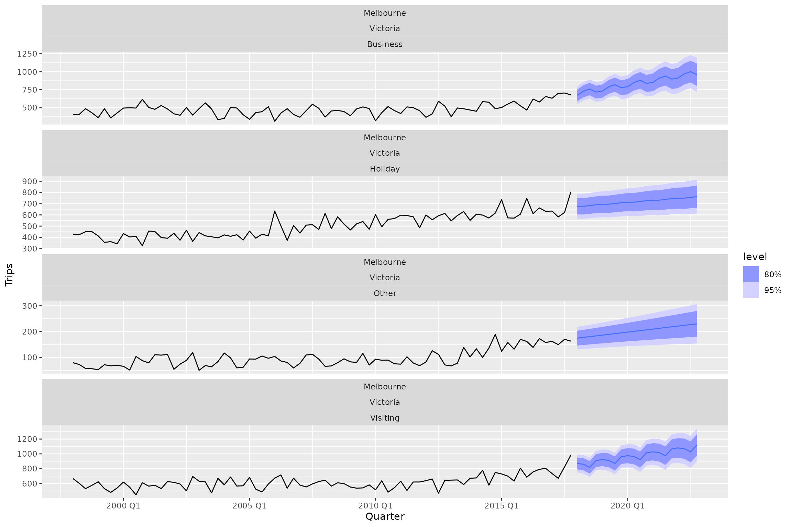
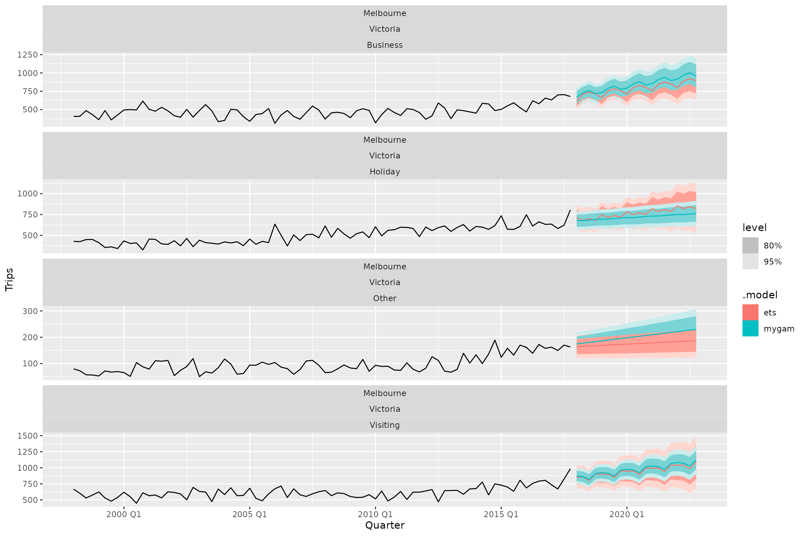
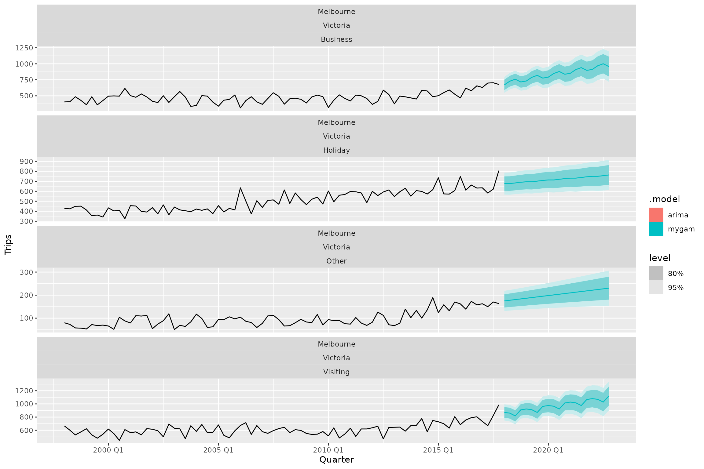
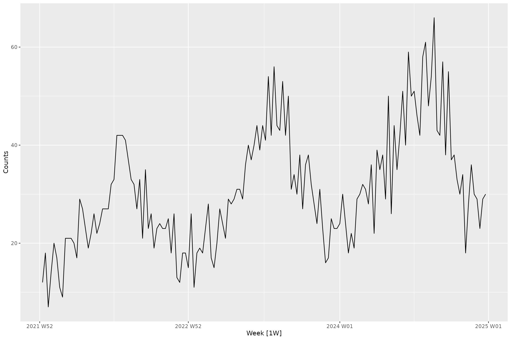
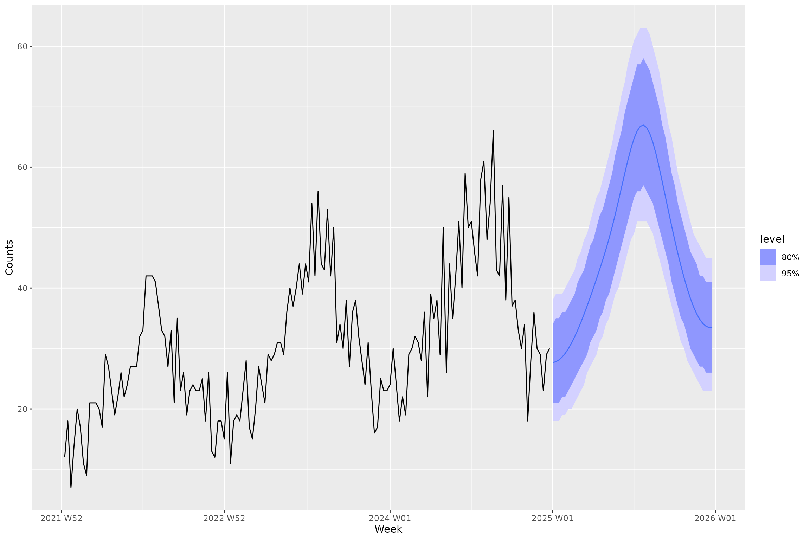
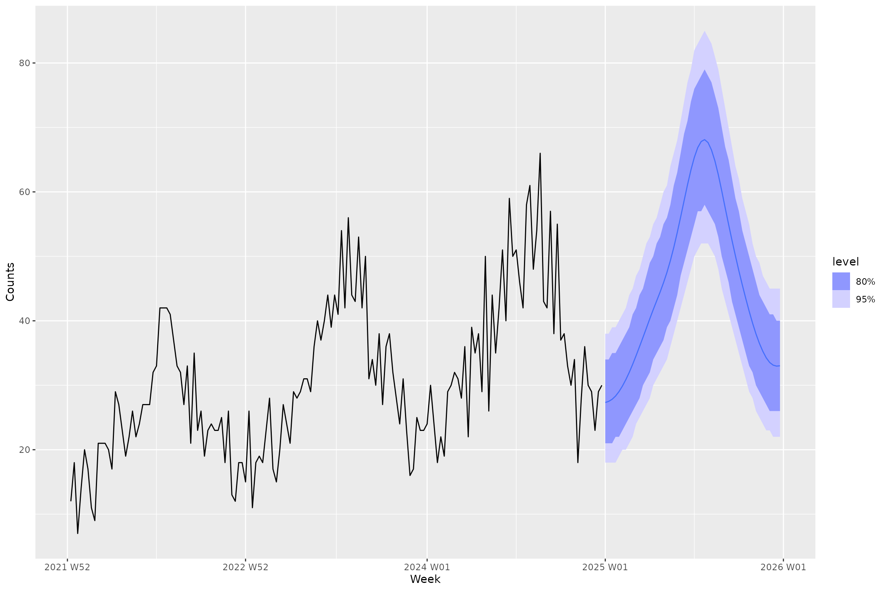

This package provides a tidy R interface to time-series modelling
using generalised
additive models (GAMs) using fable. This package makes
use of the mgcv
package for R. While not particularly common, GAMs have shown
incredible utility in time-series modelling, such as in the context of
palaeoecological
data. This package aims to incorporate the broad conceptual approach
of using structural
time-series models within a GAM setup into the incredible
fable forecasting framework.
Walkthrough of package functionality
Just like in the fable
vignette we are going to try and forecast the number of domestic
travellers to Melbourne, Australia. In the tsibble::tourism
data set, this can be further broken down into 4 reasons of travel:
“business”, “holiday”,
“visiting friends and relatives” and
“other reasons”. The variable we are going to try and
forecast is the number of overnight trips (000s) represented by the
Trips variable. We can load the dataset and visualise the
time series as follows:

Thanks to the excellent tsibble data structure for
storing time-series data in R we know that this data is sampled
quarterly. With that in mind, we are going to fit a simple time-series
GAM using a (non)linear trend term and a seasonal term with a
periodicity of 4. This is made easy in fable.gam through
the usage of the fabletools ‘special’ functions
trend and season which have been modified in
fable.gam for the purposes of GAMs. Under the hood,
fable.gam parses a trend() call as modelling a
smooth function over time to capture temporal effects and a
season() call as a smooth function using a cyclic
cubic basis spline to ensure that over the duration of the time
series, the start and end of a seasonal term connects (e.g., for data
measured on a monthly basis, the end of final month – December – needs
to connect continuously to the start of the following January).
Here is how easy this is to do in fable.gam through the
GAM() function integrated into the fable
interface:
We can then easily pipe into the rest of the fable
functionality, such as the forecast to produce forecasts.
Here are automatic forecasts using the GAM for the next 5 years:

We could then quantify model accuracy using the accuracy
function in fable:
fit |>
accuracy() |>
arrange(MASE)
[38;5;246m# A tibble: 4 × 13
[39m
Region State Purpose .model .type ME RMSE MAE MPE MAPE MASE
[3m
[38;5;246m<chr>
[39m
[23m
[3m
[38;5;246m<chr>
[39m
[23m
[3m
[38;5;246m<chr>
[39m
[23m
[3m
[38;5;246m<chr>
[39m
[23m
[3m
[38;5;246m<chr>
[39m
[23m
[3m
[38;5;246m<dbl>
[39m
[23m
[3m
[38;5;246m<dbl>
[39m
[23m
[3m
[38;5;246m<dbl>
[39m
[23m
[3m
[38;5;246m<dbl>
[39m
[23m
[3m
[38;5;246m<dbl>
[39m
[23m
[3m
[38;5;246m<dbl>
[39m
[23m
[38;5;250m1
[39m Melbourne Victo… Busine… mygam Trai… 1.26
[38;5;246me
[39m
[31m-13
[39m 52.0 39.7 -
[31m1
[39m
[31m.
[39m
[31m44
[39m 8.88 0.640
[38;5;250m2
[39m Melbourne Victo… Visiti… mygam Trai… -
[31m1
[39m
[31m.
[39m
[31m92
[39m
[38;5;246me
[39m
[31m-13
[39m 52.1 41.4 -
[31m0
[39m
[31m.
[39m
[31m751
[39m 6.76 0.660
[38;5;250m3
[39m Melbourne Victo… Holiday mygam Trai… -
[31m1
[39m
[31m.
[39m
[31m21
[39m
[38;5;246me
[39m
[31m-14
[39m 50.1 38.9 -
[31m0
[39m
[31m.
[39m
[31m990
[39m 7.79 0.706
[38;5;250m4
[39m Melbourne Victo… Other mygam Trai… -
[31m1
[39m
[31m.
[39m
[31m69
[39m
[38;5;246me
[39m
[31m-14
[39m 19.1 15.8 -
[31m4
[39m
[31m.
[39m
[31m64
[39m 18.1 0.710
[38;5;246m# ℹ 2 more variables: RMSSE <dbl>, ACF1 <dbl>
[39mAnother common task is to extract point forecasts and confidence
intervals from the forecast distribution. The hilo
function from the distributional
package knows how to automatically handle models fit in
fable:
fc |>
hilo(level = c(80, 95))
[38;5;246m# A tsibble: 80 x 9 [1Q]
[39m
[38;5;246m# Key: Region, State, Purpose, .model [4]
[39m
Region State Purpose .model Quarter
[3m
[38;5;246m<chr>
[39m
[23m
[3m
[38;5;246m<chr>
[39m
[23m
[3m
[38;5;246m<chr>
[39m
[23m
[3m
[38;5;246m<chr>
[39m
[23m
[3m
[38;5;246m<qtr>
[39m
[23m
[38;5;250m 1
[39m Melbourne Victoria Business mygam 2018 Q1
[38;5;250m 2
[39m Melbourne Victoria Business mygam 2018 Q2
[38;5;250m 3
[39m Melbourne Victoria Business mygam 2018 Q3
[38;5;250m 4
[39m Melbourne Victoria Business mygam 2018 Q4
[38;5;250m 5
[39m Melbourne Victoria Business mygam 2019 Q1
[38;5;250m 6
[39m Melbourne Victoria Business mygam 2019 Q2
[38;5;250m 7
[39m Melbourne Victoria Business mygam 2019 Q3
[38;5;250m 8
[39m Melbourne Victoria Business mygam 2019 Q4
[38;5;250m 9
[39m Melbourne Victoria Business mygam 2020 Q1
[38;5;250m10
[39m Melbourne Victoria Business mygam 2020 Q2
[38;5;246m# ℹ 70 more rows
[39m
[38;5;246m# ℹ 4 more variables: Trips <dist>, .mean <dbl>, `80%` <hilo>, `95%` <hilo>
[39mHopefully this is starting to highlight the power of why integrating
new methods into the fable framework rather than writing
bespoke pipelines is so powerful!
Comparison to other common time-series methods
We can perform a quick sense-check of the approach against more commonly-used forecasting methods such as exponential smoothing. Here we will just specify an additive trend for the ETS model and let the other components be determined automatically:
tourism_melb |>
model(
mygam = GAM(Trips ~ trend() + season(4)),
ets = ETS(Trips ~ trend("A"))
) |>
forecast(h = "5 years") |>
autoplot(tourism_melb)
Or maybe we want to compare against an ARIMA model:
tourism_melb |>
model(
mygam = GAM(Trips ~ trend() + season(4)),
arima = ARIMA(Trips)
) |>
forecast(h = "5 years") |>
autoplot(tourism_melb)
Non-Gaussian likelihoods
fable.gam is currently equipped to handle a few model
families and link functions available to users familiar with fitting
GAMs in mgcv:
- Gaussian family with any link function (e.g., identity)
- Gamma family with log link
- Poisson family with log link
- Negative binomial family with log link
These are the current options as there are clean mappings between
their statistical form in mgcv and the
distributional package which stores vectorised distribution
objects for easy calculations.
To test this functionality, we can simulate some weekly count data from a Poisson distribution with a small upward trend and seasonality and inspect the raw time series:
set.seed(123)
n_weeks <- 156
start <- as.Date("2022-01-03")
dates <- start + (0:(n_weeks - 1)) * 7
t_coef <- seq_len(n_weeks)
trend <- 0.004 * t_coef
month_no <- lubridate::month(dates)
month_fx <- c(-0.35, -0.25, -0.05, 0.10, 0.25, 0.45, 0.50, 0.40, 0.20, 0.00, -0.20, -0.35)
seasonal <- month_fx[month_no]
log_lambda <- 3.0 + trend + seasonal
counts <- rpois(n_weeks, lambda = exp(log_lambda))
# Convert to tsibble and plot to visualise temporal pattern
weekly_counts <- tsibble(Week = yearweek(dates), Counts = counts, index = Week)
autoplot(weekly_counts, Counts)
We can now fit a GAM forecast model and specify the Poisson model
family using the family() special function that is designed
to work in fable.gam (note that you only need to specify
the link argument of family() if you are using
a Gaussian model family since a log-link is used for all others).
weekly_counts |>
model(gam = GAM(Counts ~ trend() + season(12) + season(52) + family(poisson))) |>
forecast(h = "52 weeks") |>
autoplot(weekly_counts)
We can also fit a negative binomial model to the same data as a comparison:
weekly_counts |>
model(gam = GAM(Counts ~ trend() + season(12) + season(52) + family(mgcv::nb()))) |>
forecast(h = "52 weeks") |>
autoplot(weekly_counts)